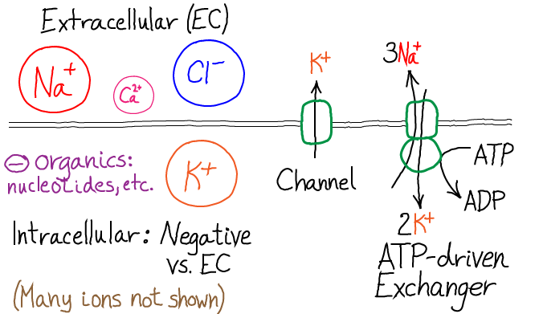

$
\newcommand{\comb}[1]{{#1}^{\mathrm{comb}}}
\newcommand{\conc}[1]{[\mathrm{#1}]}
\newcommand{\conceq}[1]{[\mathrm{#1}]^{\mathrm{eq}}}
\newcommand{\dee}{\partial}
\newcommand{\dphi}{\Delta \Phi}
\newcommand{\dplus}[1]{\mbox{#1}^{++}}
\newcommand{\eq}[1]{{#1}^{\mathrm{eq}}}
\newcommand{\fidl}{F^{\mathrm{idl}}}
\newcommand{\idl}[1]{{#1}^{\mathrm{idl}}}
\newcommand{\inn}[1]{{#1}_{\mathrm{in}}}
\newcommand{\kcat}{k_{\mathrm{cat}}}
\newcommand{\kdt}{k_{\mathrm{dt}}}
\newcommand{\kdtsol}{k^{\mathrm{sol}}_{\mathrm{dt}}}
\newcommand{\kkeq}{K^{\mathrm{eq}}}
\newcommand{\kmmon}{\kon^{\mathrm{ES}}}
\newcommand{\kmmoff}{\koff^{\mathrm{ES}}}
\newcommand{\kconf}{k_{\mathrm{conf}}}
\newcommand{\koff}{k_{\mathrm{off}}}
\newcommand{\kon}{k_{\mathrm{on}}}
\newcommand{\ktd}{k_{\mathrm{td}}}
\newcommand{\ktdsol}{k^{\mathrm{sol}}_{\mathrm{td}}}
\newcommand{\minus}[1]{\mbox{#1}^{-}}
\newcommand{\out}[1]{{#1}_{\mathrm{out}}}
\newcommand{\plus}[1]{\mbox{#1}^{+}}
\newcommand{\rn}[1]{\mathrm{r}^N_{#1}}
\newcommand{\ss}{\mathrm{SS}}
\newcommand{\totsub}[1]{{#1}_{\mathrm{tot}}}
\newcommand{\totsup}[1]{{#1}^{\mathrm{tot}}}
\newcommand{\uelec}{U^{\mathrm{elec}}}
%\newcommand{\ztot}{Z^{\mathrm{tot}}}
$
Ions and the Membrane: An Introduction

Besides its role in separating the cell from the rest of the world and organelles from the cytoplasm, the membrane and its integral proteins are critical in controlling the "electrical health" of the cell.
This involves keeping ions of a given type primarily on one side of the membrane - see above - until their flow to the other side is needed, as in the action potential of nerve cells or calcium signaling.
And once the physiological need for such flow ends, ions must be pumped back to the "resting" state (which is not an equilibrium state).
The figure above sketches key ion species - sodium ($\plus{Na}$), chloride ($\minus{Cl}$), potassium ($\plus{K}$), and calcium ($\dplus{Ca}$) - shown on the side of the membrane where the concentration of the given ion is highest.
The sizes of the circled ions crudely represent the relative concentrations between species.
The charged organic molecules include, DNA, RNA, and ATP, which have negative phosphate groups.
The figure also shows a potassium 'leak channel' and the Na-K pump, two of the transmembrane transporters involved in electrical behavior.
Basics: 'Activated ions' and passive ions
Although the overall behavior of ions is complex, because all ions interact with one another based on the laws of electrostatics, a basic picture emerges by dividing ions into two classes.
As background, note that the extracellular and intracellular concentrations of a given species will tend to adjust to the (Donnan) equilibrium point based on the potential difference across the membrane, which is embodied in the Nernst equation and results from all charged species present.
- Activated ions are those with concentrations not dictated by the Donnan equilibirum/Nernst equation - i.e., nonequilibrium concentrations. In precise analogy with activated carriers, such ions store free energy and can be used to power other processes, such as transport or can rapidly flow across the membrane as part of a physicological process such the action potential of nerve cells or calcium signaling.
In most cells, sodium ($\plus{Na}$) and calcium ($\dplus{Ca}$) are activated.
(Note that 'activated ions' is not standard terminology, but seems very descriptive.)
- Passive ions are those whose intra/extra-cellular ion concentrations are essentially consistent with the Donnan equilibirum/Nernst equation.
Importantly, just because there is a substantial ion concentration gradient across the membrane - which is true for all ions - does not mean the species is out of equilibrium.
Rather, because the cell maintains a potential differene across the membrane in its resting state, the Donnan equilibrium concentrations do not match across the membrane.
The cell has evolved to keep only a subset of ions 'activated'.